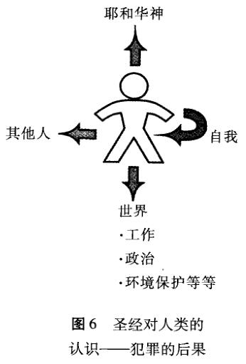

任何一个故事的主要特征都是它的中心冲突，即那出现了的、亟待解决的问题。尤金·彼得森 (Eugene Peterson) 如此描述它:“灾难发生了，我们不再与最初的美好保持一致性；一场灾祸使我们与其分离，当然，我们也与最终的美好相分离。换句话说，我们处于混乱之中。”¹《创世记》所描述的巨大冲突是罪进入了上帝的完美世界。这一灾难在上帝创世后不久就发生了，好像要损毁创世自身的美好，使其后的每一件事都带上罪恶的影子。《创世记》3章描述了圣经故事中的这一阴影，通常被 (简单而不祥地)称为“堕落”的故事。
正如我们在《创世记》1-2章中所见，探索我们所面对的文学的体裁是很重要的。当讨论“堕落”时，有些学者轻率地诉诸“神话”和“传奇”等术语。但是，这一叙述是更大结构的一部分 (《创世记》2：4-3：24)，它由重要短语“……的来历……乃是这样”所引入，表明作者认为以后的部分与真实发生的事情有关。因此，我们要认真对待《创世记》3章所记述的事件，即使我们意识到有些细节——包括会说话的古蛇和象征性的树——与我们所熟悉的任何历史文献都不同。在我们看来，《创世记》3章的确信实地向我们讲述了在上帝的世界中罪恶的神秘起源。它根源于人类第一对夫妇的背叛，他们被引诱且屈服，带来了灾难性的后果。
《创世记》前两章清楚地表明人类在上帝创造他们的时候是好的。即便是上帝将亚当和夏娃安置于其中的园子的名字——伊甸园——也是要带来欢乐和愉悦的。²伊甸园土地肥沃，富含矿物。有些学者指出，对伊甸园的描述表明这是上帝自身的居住之地。这一点在《创世记》3：8得以确定，这一节讲到耶和华神在伊甸园中行走并与亚当和夏娃亲密交谈。在一开始的时候，被造的万物充满平安的芳香之气，“平安”(sha-lom)是《旧约》中描述平安的词语，意味着上帝为其创造物的设计的丰富、完整、彼此相关的整全性。亚当和夏娃的生活是一种平安的生活，他们同上帝一起散步，他们彼此拥有，在园中耕种肥沃的土地、修剪昌盛的植物，乐园满足他们的一切需要。在这一地平线之上没有暴风雨，没有烦扰来临的预兆，能出什么问题呢?
从自身的经历中我们都知道，我们所居住的这个世界被深深地伤害
了，但是导致这结果的原因是什么呢?当我们读到有关伊甸园里的生活时，我们渴望自己的生活就是那样。为什么我们的生活如此不同?《创世记》3章回答了这一问题，尽管它可能没有提供我们想知道的一切信息。我们没有被告知那会说话的古蛇从哪里来或他到底是谁。(只是后来，在圣经中我们得知这一“造物”亦被称作撒旦 [Satan]；参照《启示录》12：9)。这样一个造物怎能破坏了上帝美好的创造?这些问题都没有得到回答，它们警示我们注意创世中罪恶起源的神秘性；我们应该认真地对待这一奥秘。
具有选择的自由是做人的一部分。即使在上帝美好的创世中，亚当和夏娃相爱的自由意味着他们可以选择不相爱；因此，他们可能经历诱惑。但是，他们将如何被诱惑呢?答案就在神秘的“分辨善恶的树”(《创世记》2：9)中。古蛇引诱他们吃这树上的果子，违反上帝的吩咐(2：17；3：1-5)。但这意味着什么?这个故事是圣经中唯一提到这样一棵树的地方，它代表着享有自主性 (autonomous，来自希腊词语“au-tos”[自我]和“nomos”[法律])这一诱惑——认识到这一点是非常重要的。
亚当和夏娃能够遵从上帝，抑或违抗上帝。他们可以服从上帝的律法、享受生活，他们亦可以试着不依靠上帝的教诲而寻找自己的道路、经历死亡。亚当和夏娃是被造物，作为完整而美好的人类，根据上帝的生活准则，在他的统治下活出自由。他们所面对的古蛇的诱惑就是要宣称他们的自主性：他们可以自立律法。自主性意味着自身可以成为判断对错的源泉，而非依赖于上帝的话语作为指导。古蛇狡猾地使亚当和夏娃对上帝的话产生怀疑，甚至怀疑上帝本身内在的好。它暗示说上帝担心人类一旦通过吃那树上的果子而亲身体验了善与恶，将会变得与他不相上下。上帝已经说过，如果他们吃了善恶树上的果子他们就会死，但是古蛇却暗示其吃树上的果子就是找到通往真正生活的道路。依据这些建议，女人和男人不同于前地看待这棵树——他们摘了并吃了果子。
奇怪的是，一开始，古蛇看起来是对的：亚当和夏娃的确没有立即死亡。或说他们死了?这一故事令我们长期而艰难地反思“死亡”的含义。亚当和夏娃吃果子时他们的肉体生命并没有立即停止：那果子并
不是神话故事中的毒苹果。但是他们中间的某些事物确实死了，他们的自我意识和彼此间的关系动摇了。他们的自我意识变得病态，因此急于遮住他们赤裸的身体；他们第一次感到羞耻。并且 (更为糟糕的是)，他们与耶和华神的关系也被破坏：他们因害怕和羞耻而躲藏不见他。上帝质问亚当和夏娃，宣布审判。古蛇被诅咒，女人生产儿女变得困难，地自身遭受诅咒以至工作对于男人来说变得困难且不再愉快。亚当和夏娃被赶出伊甸园，且通往乐园的路被封锁。
这一故事含义是如此丰富，因此带给我们许多思考之处。朝罪恶中的“堕落”依然是一个谜，但是《创世记》3章的故事显明了罪恶的本质。它是一种对自主性的要求，是将我们自身与上帝相分离的意图。犯罪的后果也清晰地展现；正如《创世记》2章展示处于被造和未堕落关系中的人类，《创世记》3章集中于人类背叛神圣的王之后那些关系的破裂。我们人类是为了享有彼此间的关系而被造，但罪的后果是使我们彼此分离。尤其是，人类是为了享受与上帝的关系而被造，但亚当和夏娃的罪使得他们逃离上帝并感到害怕、羞耻和孤独。亚当归咎于夏娃，夏娃归咎于古蛇，亚当和夏娃都试图遮住他们裸露的身体。
所有这些行为表明罪既已经破坏了自我意识，也破坏了彼此间的归属感。上帝的审判表明他们生活中的社会以及工作维度亦同样地被扭曲变形。尽管男人和女人在肉体上确实没有死亡——至少并非立即——我们从这一故事中认识到“死亡”不仅仅意味着肉体生命的结束，而是具有更多的含义。总体上，死亡意味着关系的扭曲，尤其是那种与上帝间的重要关系的结束：

这个世界的故事注定如此快速、悲伤地结束吗?绝非如此。即
33
使是在罪进入世界的悲剧故事中，上帝也没有放弃他创世和建立他的国度的目的。尽管亚当和夏娃从他身边逃走，上帝仍旧仁慈地主动寻出他们。在宣布审判时，上帝诅咒古蛇，诅咒要叫古蛇的后裔和女人的后裔彼此为仇 (《创世记》3：15)。女人的后裔要伤古蛇的头：上帝许诺要消除亚当和夏娃所释放的罪恶的势力。这是《福音书》中的第一个圣经应许：基督将作为“女人的后裔”，打败撒旦，尽管他自身付出了巨大的代价，他的“脚跟”受到了“伤害”。在《创世记》3：20 中，上帝考虑到亚当和夏娃的羞耻，用动物的皮子给他们做衣服穿。在《旧约》中，脱去某人的衣服可以意味剥夺他们的继承权；上帝给亚当和夏娃提供衣服表明上帝并未放弃对他们的目的，他们仍然要在这个世界中承载上帝的形象，仍然要“继承土地”。³
亚当和夏娃离开了伊甸园，他们的未来看起来非常不确定。(的确，他们并没有因吃禁果而肉体立即死亡。具有讽刺意味的是，在这一点上，古蛇是正确的。但在其他的任何方面，他都相当之错。)违抗带来了灾难，完美的乐园在他们身后关闭，不确定的、危险的世界隐现面前。当耶和华神找到他们时，面对他是多么可怕的一件事情！直接面对神是多么困难！然而他却赐予了他们衣服穿，并且还有那个神秘的应许有待他们思考，在此应许中他讲到夏娃的后裔要伤古蛇的头。
本页内容由站点发布者提供的授权 Word 版本转换而来。为保留原书内容，文字按源文件呈现；版权归原作者及出版方所有。